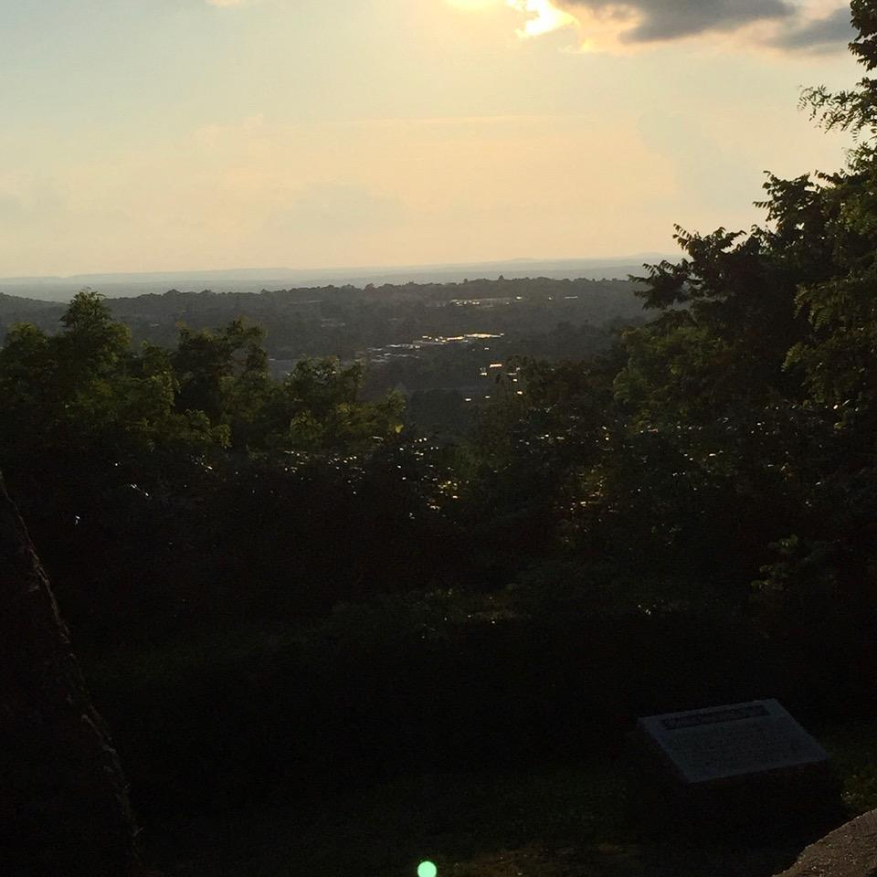
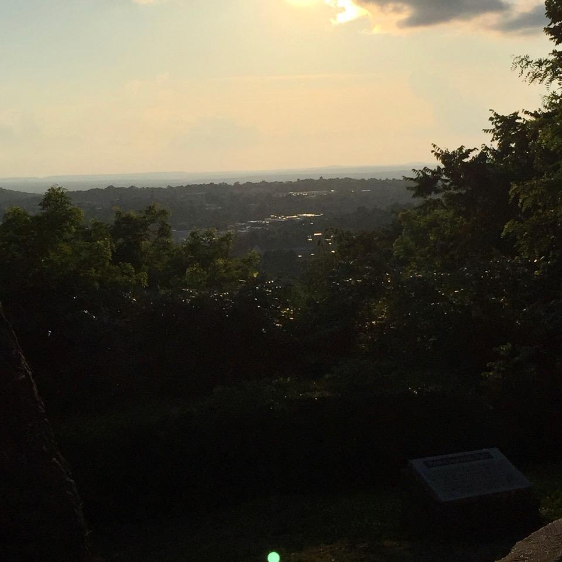
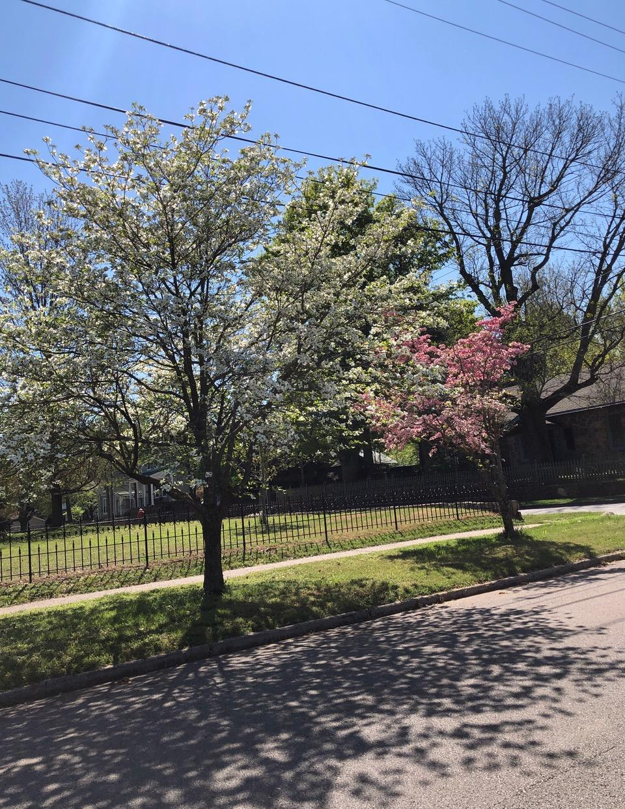
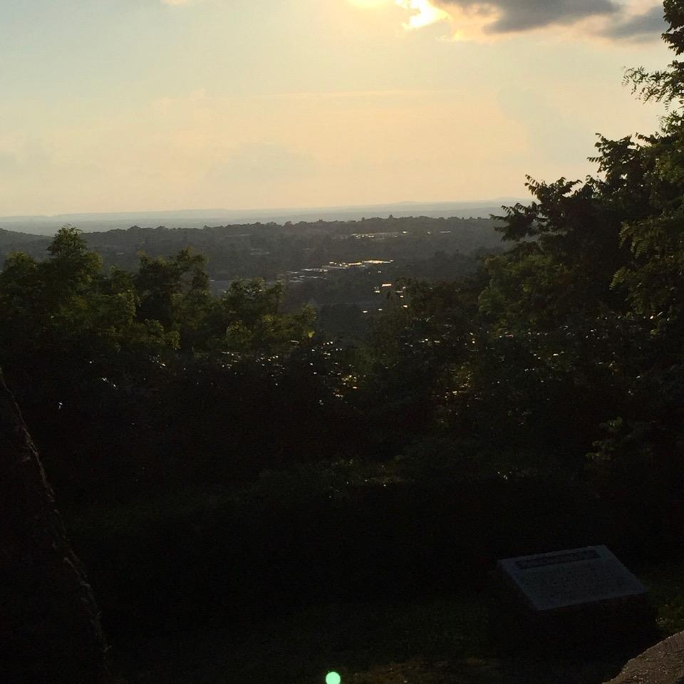
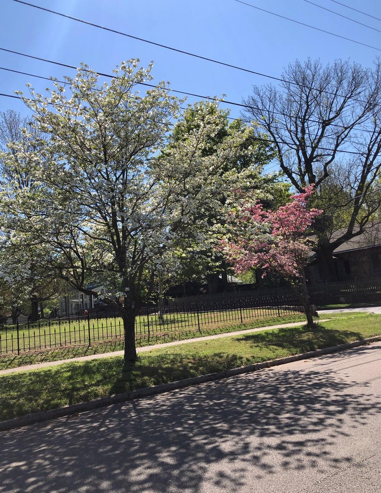
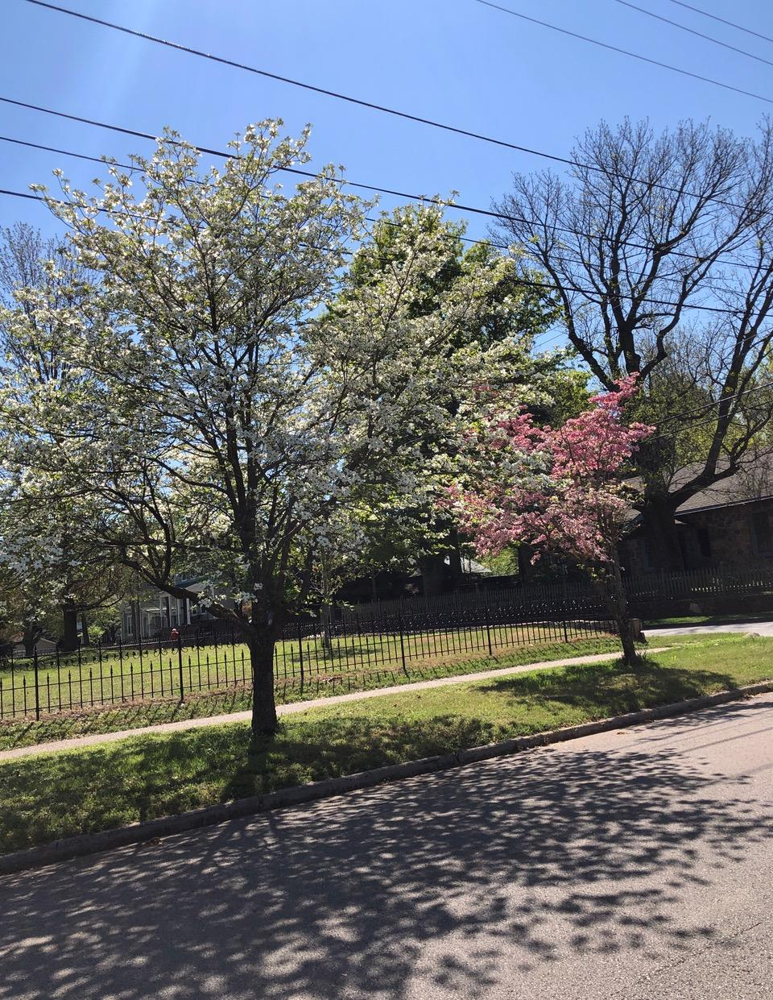
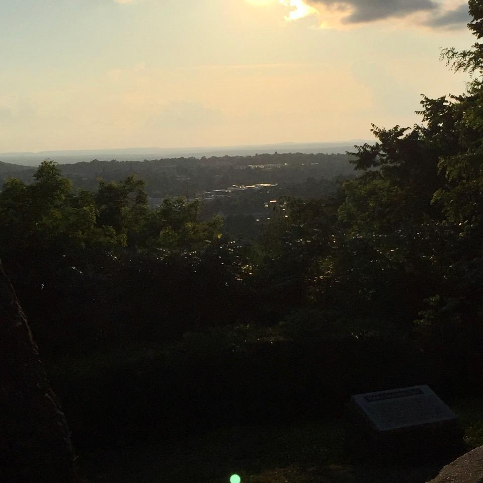
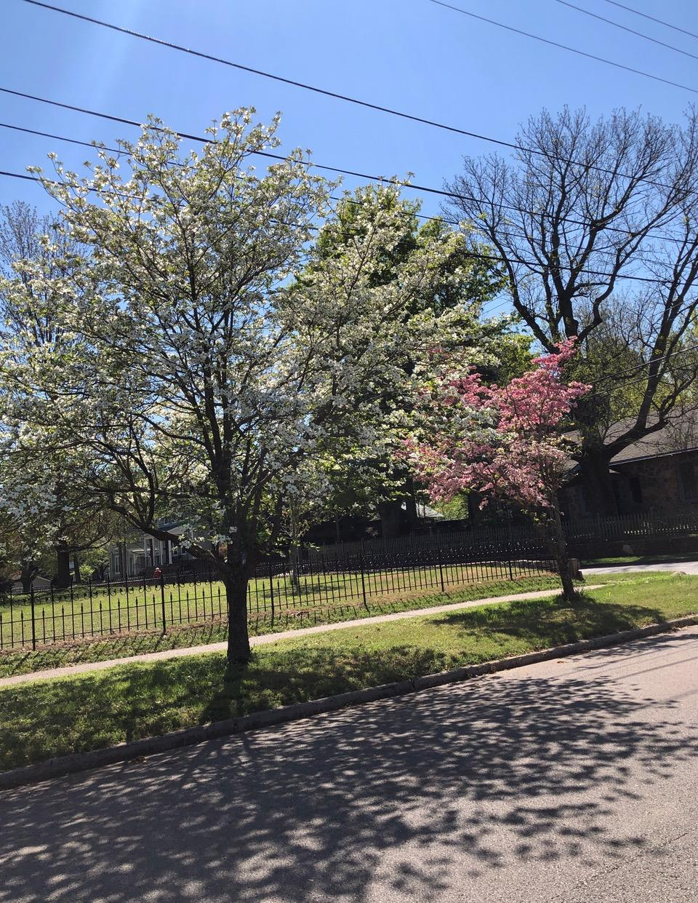

 





As you leave the River Valley and drive through the scenic Boston Mountains, you reach the area known as Northwest Arkansas. This is one of the most fascinating areas to visit, live or just pass through in the state of Arkansas. The area speads over Washington, Benton and Madison counties and includes dozens of cities and towns that each have their own distinct personalities. The natural limestone that the area sits on provides natural caves to explore and parks based around them to explore and camp on. The area also has a rich history that blends in with the layout of the landscape. This includes two Civil War battlefields, Pea Ridge and Prairie Grove, that are open for free to the public for a picnic or a pleasant spring walk.
A connector between many of the towns in Northwest Arkansas is one of the most recent innovations in the area. The Razorback Regional Greenway is a 36 mile trail that begins in Fayetteville and ends in Bentonville. Existing trails in the region act as connectors to enter the main trail, as well as several heads to park your car and enter. This has created a notable trail system that is written about nationally and is bringing in an economic windfall for the area. The trails vary in difficulty, with most of the trail accessible for the whole family while other sections are better for the more advanced or off-road cyclists. You can easily follow the trail to reach parts of Fayetteville, Springdale, Rogers and Bentonville.
Northwest Arkansas is an outdoor enthusiasts paradise. With multiple lakes, parks and a growing cycling culture, this area is continuing to grow and evolve. Anyone who comes to the region can see the vestages of the Native Americans who used to be the dominant inhabitants, the beginning of the settlements in the 1800s, and the economic growth from the 20th century and beyond. In a state known as "the Nautral State", Northwest Arkansas is a gem among the other natural wonders among the state.